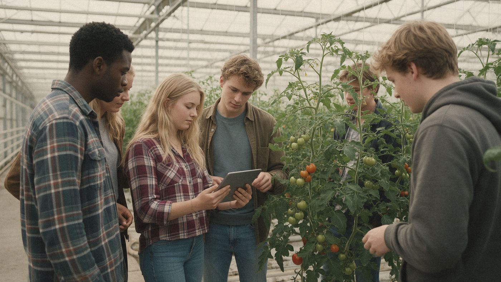

Home › Opleidingen › Landbouw, dieren & natuur › Opzichter/uitvoerder groene ruimte

Wat is Opzichter/uitvoerder groene ruimte?
Opzichter/uitvoerder groene ruimte is een opleiding op mbo (niveau 4) in de groep Landbouw, dieren & natuur. Werken met planten, dieren, voedsel en het landschap.
Wat kun je ermee?
- Ecoloog of natuurbeheerder
- Adviseur duurzaamheid of landbouw
- Agrarisch ondernemer
- Dierverzorger of dierenarts (met selectie)
Wat heb je ervoor nodig?
- Voor mbo: een vmbo-diploma; voor niveau 4 meestal vmbo-tl/gl of kader. Zonder diploma kan Entree (niveau 1)
- Een natuurprofiel helpt. Voor het hbo ook mbo-groen. Diergeneeskunde heeft selectie.
- Het helpt als je: Graag buiten werken, Zorg voor dieren of planten, Praktisch werken
Selectie of toelatingsexamen?
Bij diergeneeskunde selectie. Kijk bij de opleiding zelf wat er precies gevraagd wordt.
Hoe lang duurt het?
mbo: 1 tot 4 jaar, afhankelijk van het niveau. Je kunt het volgen als bbl (werken en één dag naar school) en bol (vooral leren, met stages).
Bij bol ga je vooral naar school en loop je stage. Bij bbl werk je bij een leerbedrijf en ga je één dag per week naar school; je verdient dan al salaris. Het diploma is hetzelfde. Meer over bol en bbl
Waar kun je Opzichter/uitvoerder groene ruimte studeren?
Bij 24 scholen, onder andere in Almelo, Almere, Barendrecht, Barneveld, Bleiswijk, Boxtel, Breda, Doetinchem, Emmeloord, Goes, Groningen en Hoorn:
- Aeres MBO Almere
- Aeres MBO Barneveld
- Aeres MBO Emmeloord
- Aeres MBO Leeuwarden
- Aeres MBO Velp
- Curio R
- Curio voedsel, groen en gastvrijheid
- Lentiz | MBO Barendrecht
- Lentiz | MBO LIFE College
- Lentiz | MBO Maasland
- Lentiz | MBO Middelharnis
- Lentiz | MBO Oostland
- Lentiz | MBO Westland
- MBO Terra
- Scalda - Groen
- Vonk Hoorn mbo
- Yuverta mbo Boxtel
- Yuverta mbo Houten
- Yuverta mbo Nijmegen
- Yuverta mbo Rijswijk
- Yuverta mbo Roermond
- Yuverta mbo Rotterdam
- Yuverta mbo Velp
- Zone.college mbo
Verwante opleidingen
- Assistent plant, dier of groene omgeving
- Medewerker hovenier en groenvoorziening
- Vakbekwaam medewerker hovenier en groenvoorziening
- Medewerker groen, grond en groene infra
- Dierenartsassistent paraveterinair
- Medewerker teelt
- Medewerker veehouderij
- Vakbekwaam medewerker bloem, groen en styling
- Vakbekwaam medewerker groen, grond en groene infra
- Vakbekwaam medewerker teelt
Past Opzichter/uitvoerder groene ruimte bij jou? In de app zie je hoe ver elke school van je huis is, wanneer de open dagen zijn en wat je Plan B is. Je kunt hem ook op je lijst zetten.
Bekijk in de appDoe de Padvinder